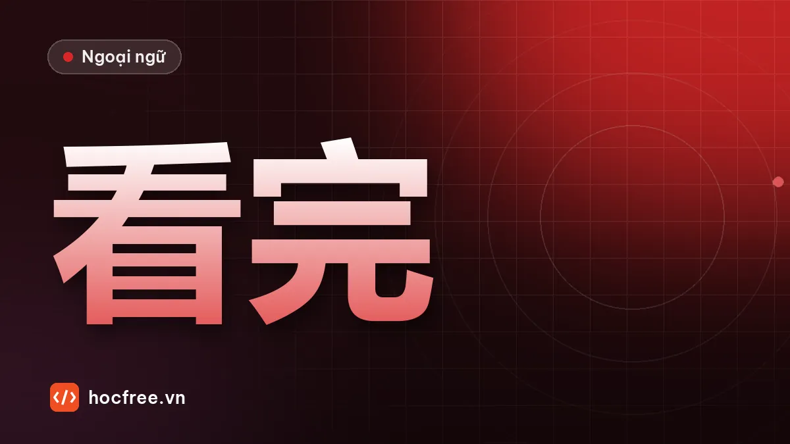

Bổ ngữ kết quả trong tiếng Trung: làm xong, nghe hiểu, nhìn thấy
Động từ + kết quả: 完, 好, 到, 懂, 见, 错, 对, 清楚, phủ định bằng 没, câu hỏi 了没有 và lý do người Việt hay bỏ quên bổ ngữ khi nói tiếng Trung.

Học xong bài này, bạn sẽ
- Dùng 8 bổ ngữ kết quả thông dụng
- Phủ định và hỏi với bổ ngữ kết quả
- Chọn đúng bổ ngữ theo nghĩa
Nên học trước: Kiểm tra cuối giai đoạn HSK 2
Nội dung bài viết
Tiếng Việt nói "tôi nghe rồi" mà ý là "tôi nghe hiểu rồi"; nói "tôi tìm rồi" mà chưa rõ đã tìm thấy hay chưa. Tiếng Trung tách bạch: hành động (听, 找) và kết quả của nó (懂, 到) đi thành một cụm: 听懂 (nghe hiểu), 找到 (tìm thấy). Đây là bổ ngữ kết quả, điểm ngữ pháp trọng tâm đầu tiên của HSK 3 và xuất hiện trong gần như mọi câu kể việc đã làm.
Từ vựng: 10 bổ ngữ kết quả thông dụng
| Bổ ngữ | Ý nghĩa kết quả | Ví dụ | Nghĩa |
|---|---|---|---|
| 完 wán | xong, hết | 吃完, 写完, 用完 | ăn xong, viết xong, dùng hết |
| 好 hǎo | xong một cách ổn thỏa, sẵn sàng | 准备好, 做好, 坐好 | chuẩn bị xong, làm xong, ngồi ngay ngắn |
| 到 dào | đạt được mục đích, đến được | 找到, 买到, 收到, 学到 | tìm thấy, mua được, nhận được, học đến |
| 见 jiàn | cảm nhận được (giác quan) | 看见, 听见 | nhìn thấy, nghe thấy |
| 懂 dǒng | hiểu | 听懂, 看懂 | nghe hiểu, đọc hiểu |
| 错 cuò | sai | 写错, 打错, 说错 | viết sai, gọi nhầm, nói sai |
| 对 duì | đúng | 说对, 做对 | nói đúng, làm đúng |
| 清楚 qīngchu | rõ | 看清楚, 听清楚, 说清楚 | nhìn rõ, nghe rõ, nói rõ |
| 会 huì | biết (sau khi học) | 学会 | học được, biết làm |
| 干净 gānjìng | sạch | 洗干净, 打扫干净 | rửa sạch, dọn sạch |
Từ mới đi kèm: 准备 zhǔnbèi (chuẩn bị), 收 shōu (nhận), 洗 xǐ (rửa, giặt), 钥匙 yàoshi (chìa khóa), 课 kè (bài học), 资料 zīliào (tài liệu).
Phát âm
- Bổ ngữ kết quả đọc liền với động từ như một từ: 看见 kànjiàn, 听懂 tīngdǒng, 找到 zhǎodào.
- 干净 gānjìng: chữ sau thường đọc nhẹ trong khẩu ngữ (gānjing).
- 清楚 qīngchu: chữ sau thanh nhẹ.
Ngữ pháp
1. Cấu trúc: động từ + bổ ngữ kết quả (+ 了) + tân ngữ
- 我找到钥匙了。 Tôi tìm thấy chìa khóa rồi.
- 我听懂了。 Tôi nghe hiểu rồi.
- 报告写好了。 Báo cáo viết xong rồi.
- 我收到了你的邮件。 Tôi đã nhận được email của bạn.
Động từ và bổ ngữ dính liền, không chen gì vào giữa: ✘ 我找钥匙到了.
2. Phủ định: 没 + động từ + bổ ngữ (bỏ 了)
- 我没听懂。 Tôi chưa nghe hiểu.
- 我还没找到。 Tôi vẫn chưa tìm thấy.
- 报告还没写完。 Báo cáo vẫn chưa viết xong.
Không dùng 不 với bổ ngữ kết quả cho việc đã xảy ra: ✘ 我不听懂. (不 chỉ xuất hiện trong câu điều kiện, ví dụ 不写完不能回家: chưa viết xong thì không được về.)
3. Câu hỏi
- 你听懂了吗？ / 你听懂了没有？
- 你看见我的手机了吗？
4. So sánh có và không có bổ ngữ
| Không có kết quả | Có kết quả |
|---|---|
| 我找了，可是没找到。 Tôi tìm rồi nhưng không thấy. | 我找到了。 Tôi tìm thấy rồi. |
| 我看了，可是没看懂。 Tôi đọc rồi nhưng không hiểu. | 我看懂了。 Tôi đọc hiểu rồi. |
| 我听了。 Tôi đã nghe. | 我听见了。 Tôi nghe thấy rồi. |
Hai câu đầu cho thấy vì sao bổ ngữ kết quả quan trọng: hành động có thể xảy ra mà kết quả không đạt. Người Việt hay quên bổ ngữ, nói 我找了 khi ý là "tìm thấy rồi", khiến người nghe hiểu lầm.
5. 到 với nơi chốn và thời gian
到 còn chỉ hành động kéo đến một điểm: 我们学到第十课了 (chúng ta học đến bài 10 rồi), 昨天我工作到晚上十点 (hôm qua tôi làm đến 10 giờ tối), 他回到家了 (anh ấy về đến nhà rồi).
Ví dụ thực tế ở nơi làm việc
- 资料都准备好了吗？ Zīliào dōu zhǔnbèi hǎo le ma? Tài liệu chuẩn bị xong cả chưa?
- 对不起，我写错了一个数字。 Duìbuqǐ, wǒ xiě cuò le yí gè shùzì. Xin lỗi, tôi viết sai một con số.
- 您说得太快，我没听清楚。 Nín shuō de tài kuài, wǒ méi tīng qīngchu. Anh nói nhanh quá, tôi nghe chưa rõ.
Hội thoại: trước buổi họp
A: 会议的资料准备好了吗？
Huìyì de zīliào zhǔnbèi hǎo le ma?
Tài liệu cuộc họp chuẩn bị xong chưa?
B: 准备好了。可是我没找到上个月的报告。
Zhǔnbèi hǎo le. Kěshì wǒ méi zhǎodào shàng gè yuè de bàogào.
Xong rồi. Nhưng tôi chưa tìm thấy báo cáo tháng trước.
A: 我昨天发给你了，你没收到吗？
Wǒ zuótiān fā gěi nǐ le, nǐ méi shōudào ma?
Hôm qua tôi gửi cho bạn rồi, bạn không nhận được à?
B: 啊，我看见了！对不起，我看错了日期。
À, wǒ kànjiàn le! Duìbuqǐ, wǒ kàn cuò le rìqī.
À, tôi thấy rồi! Xin lỗi, tôi nhìn nhầm ngày.
A: 没关系。快点儿，会议马上就要开始了。
Méi guānxi. Kuài diǎnr, huìyì mǎshàng jiù yào kāishǐ le.
Không sao. Nhanh lên, họp sắp bắt đầu rồi.
日期 rìqī: ngày tháng.
Luyện tập
Bài 1. Điền bổ ngữ kết quả: (1) 你说的话我都听___了。 (2) 我的钥匙找___了吗？ (3) 衣服洗___了。 (4) 对不起，我打___电话了。 (5) 你看___我的眼镜了吗？ (6) 晚饭做___了，来吃吧！ (7) 我学___游泳了。 (8) 请你说___一点儿。 (9) 我们学___第十五课了。 (10) 这个月的钱用___了。 (11) 这个字你写___了，应该是"已"。 (12) 你说___了，就是这个！
Bài 2. Phủ định các câu: (1) 我听懂了。 (2) 他找到工作了。 (3) 报告写完了。
Bài 3. Sửa lỗi: (1) 我不看见他。 (2) 我找钥匙到了。 (3) 我没听懂了。
Xem đáp án
Bài 1. (1) 懂 (2) 到 (3) 干净 (4) 错 (5) 见 (6) 好 (7) 会 (8) 清楚 (9) 到 (10) 完 (11) 错 (12) 对.
Bài 2. (1) 我没听懂。 (2) 他没找到工作。/ 他还没找到工作。 (3) 报告还没写完。
Bài 3. (1) 我没看见他。 (2) 我找到钥匙了。 (3) 我没听懂。
Kiểm tra cuối bài
1. 我看了 và 我看懂了 khác nhau thế nào?
2. Phủ định của bổ ngữ kết quả dùng 不 hay 没?
3. "Tôi nhận được email rồi" nói thế nào?
Xem đáp án
- 我看了: đã đọc/xem (chưa chắc hiểu). 我看懂了: đọc hiểu rồi.
- 没 (bỏ 了).
- 我收到邮件了。/ 我收到了你的邮件。
Tổng kết và ôn tập
- V + kết quả: 完, 好, 到, 见, 懂, 错, 对, 清楚, 会, 干净.
- Phủ định 没 + V + kết quả; câu hỏi …了吗 / 了没有.
- Đừng quên bổ ngữ khi muốn nói kết quả đã đạt.
Bài ôn: viết 6 câu báo cáo công việc đã làm xong, chưa làm xong. Bài tiếp theo: bổ ngữ xu hướng.
Bài tập thực hành
- Điền bổ ngữ kết quả vào 12 câu trong phần luyện tập.
- Viết 6 câu báo cáo công việc đã làm xong, chưa làm xong.
Làm xong bài tập mới chuyển sang bài tiếp theo: đọc to, tự viết chữ Hán và tự chấm đáp án là cách duy nhất để nhớ lâu.